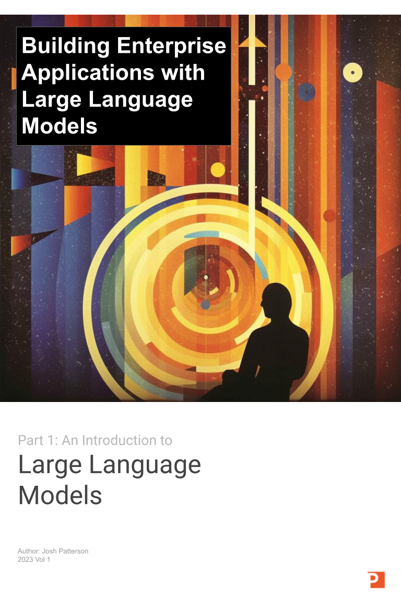

Large language models, such as GPT-3.5, are advanced artificial intelligence systems designed to understand and generate human-like text. These models are trained on vast amounts of data to learn the patterns, structures, and semantics of language. They can then generate coherent and contextually relevant responses to various prompts.
Training a large language model involves utilizing a massive dataset, which often includes a wide range of texts from books, articles, websites, and other written sources. This diverse corpus helps the model learn the nuances of human language and develop a broad understanding of various topics.
Once trained, large language models can be used for a wide range of applications. They can:
- generate human-like text
- answer questions
- assist with language translation
- write code
- summarize articles
- create conversational agents
Large language models have many compelling use cases, but to me the most interesting attribute they offer is the ability to reason.
For years we've watched "software eat the world" and more often than not the "knowledge worker"-class was insulated from the direct effects on society from the point of view of "will this destroy my livelihood"?
However, if basic reasoning is commoditized, how do the knowledge workers adapt to this new world?
In this series I not only cover topics such as "prompt engineering" and "vector databases", but also dive head-first into the looming existential dread for the knowledge worker. I look at several situations over the past 200 years where technology changed society and how it played out.
I also used Midjourney to generate the art in this article using combinations of themes such as "introspection", "1800's textile workers", and "existential dread in the face of a changing world". I really loved how the images turned out and the visuals helped tell the story in a way that I not of in my own words. The way that I was able to use generative AI here felt like a "meta" case in point where I was able to augment my own ability to reason/imagine/create/communicate.
It's an interesting time to work in the field of natural langauge and machine learning as old ideas are being re-evaluated. Application design patterns are being re-thought in a world where natural language is potentially the "domain specific language" for everything and many existing large language models are "good enough" for enterprise tasks without being specialized.
This e-book was fun to write because it touches on themes we started addressing back in 2018 in O'Reilly's "Deep Learning: A Practitioner's Approach" book. O'Reilly was also gracious enough to allow us to include "Appendix A: What is Artificial Intelligence?" from the book, and I've included it as an appendix in this e-Book as well. I felt it compelling to include because we touched on the many definitions of AI and that one of the definitions was "AI as the reasoner". With large language models bringing reasoning to the forefront, I felt that writing was useful in this context once again.
There is much to reflect on in the world of large language models as our inner-Luddite does mental gymnastics with out imagination for what more we could accomplish with "augmented reasoning" through applied use of LLMs.
The Patterson Consulting team continues to explore ways to apply LLMs and integrate reasoning into enterprise use cases. We also continue to explore ways to deliver custom private enterprise agents in production with our augmentedreasoning.ai SaaS platfrom.
I hope the themes in this series give you ideas of your own to explore. Don't hesitate to contact me if you have questions or want to just talk about themes touched on in this e-book.
Get PDF
Audience
Anyone who needs to understand large language models, from machine learning engineers, to SWE, product or project manager, student, or simply curious. To get a better idea on how to read the document:
| If you want to understand | Check out sections |
|---|---|
| An overview of LLMs | Part 1, Section 1 |
| LLM Abilities and How to Measure Them | Part 1, Section 2 |
| What is Artificial Intelligence | Appendix A |
Feedback / Contact Us
If you'd like to share a comment about our work (typos, other papers, etc) or want to talk about potential use cases, feel free to reach out to us.